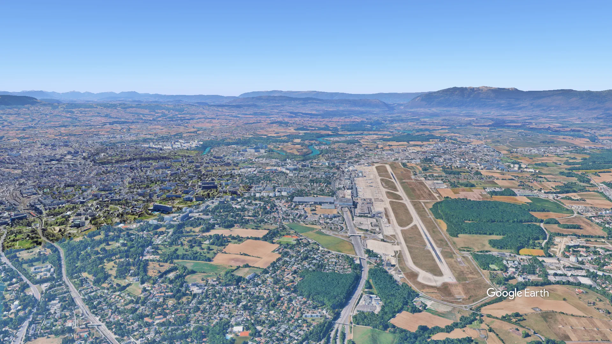

Genève
Bienvenue à Genève
Votre porte vers le monde
180 destinations
Vers 140 villes, en direct, toute l'année.
Prêt pour l'embarquement
Scrollez pour découvrir
L'aéroport en 3D
Explorez l'aéroport
Du dépôt des bagages à la porte d'embarquement, parcourez le terminal en volume et repérez chaque étape de votre passage.
Glisser : pivoter
Clic droit : déplacer
Molette : zoomer
Au clavier : flèches pour pivoter et incliner, plus et moins pour zoomer, zéro pour revenir à la vue de départ.
Chargement de la maquette 3D
Temps réel
Vos vols en temps réel
mise à jour auto · 30 s
| Heure | Destination | Vol | Porte | Terminal | Statut |
|---|
Venir à l'aéroport
Accès & Parking
Train, bus, voiture ou taxi : choisissez le trajet qui vous convient, et réservez votre place de parking avant de partir.
-
Train
7 min depuis la gare centrale
La gare est au niveau 0, sous le terminal. Départs toutes les 10 minutes en journée.
-
Bus & tram
15 min depuis le centre-ville
Arrêts devant le hall des arrivées. Un billet unique couvre aussi les transports du centre.
-
Voiture
20 min depuis le centre-ville
Sortie d'autoroute signalée « Aéroport ». Trois parkings à moins de 10 minutes du terminal.
-
Taxi & VTC
15 min depuis le centre-ville
Station devant les arrivées, et zone de dépose rapide devant les départs, niveau 1.
Se garer
Réservez en ligne : le tarif est garanti, et la barrière s'ouvre avec votre plaque d'immatriculation.
-
P1 · Court séjour
4 CHF / heure
- Distance
- 2 min à pied
- Idéal pour
- Accueillir ou déposer
-
Le plus choisi
P2 · Longue durée
28 CHF / jour
- Distance
- 6 min à pied
- Idéal pour
- Un week-end ou plus
-
P3 · Économique
14 CHF / jour
- Distance
- Navette gratuite, 8 min
- Idéal pour
- Les longs séjours
Après la sûreté
Boutiques & restaurants
Horlogerie, chocolats, une table pour patienter : tout se trouve en zone réservée, à quelques minutes de votre porte.
-
Boutique
Duty Free Genève
Horlogerie, parfums, spiritueux et chocolats suisses, aux prix hors taxes. Commande en ligne à retirer au comptoir.
- Étage
- Niveau 2
- Horaires
- 05:00–22:30
-
Boutique
Chocolaterie du Léman
Tablettes, truffes et coffrets emballés pour le voyage. Dégustation offerte le matin.
- Étage
- Niveau 2
- Horaires
- 06:00–22:00
-
Boutique
Relais presse
Journaux, magazines, livres, chargeurs et adaptateurs de prise pour toutes les destinations.
- Étage
- Niveau 1
- Horaires
- 04:30–22:30
-
Boutique
Pharmacie du voyageur
Médicaments, trousses de voyage, protection solaire et produits au format cabine (100 ml).
- Étage
- Niveau 1
- Horaires
- 06:00–21:00
-
Restaurant
Café des Bergues
Café, viennoiseries et petit-déjeuner suisse dès l'ouverture, à emporter ou sur place.
- Étage
- Niveau 1
- Horaires
- 04:30–21:00
-
Restaurant
Brasserie Alpine
Fondue, röstis et filets de perche. Une vraie table avec vue sur les pistes.
- Étage
- Niveau 2
- Horaires
- 10:30–22:00
-
Restaurant
Pause express
Sandwichs, salades et plats chauds prêts en trois minutes, pour les correspondances courtes.
- Étage
- Niveau 2
- Horaires
- 05:00–22:30
Avant de partir
Infos pratiques
L'essentiel pour arriver à l'heure, passer la sûreté sans stress et voyager l'esprit tranquille.
-
Arriver à temps
2 h avant
pour un vol court-courrier, 3 h pour un vol long-courrier.
-
Dépôt des bagages
40 min avant
la fermeture du comptoir, ou en ligne dès 24 h avant le vol.
-
Liquides en cabine
100 ml
par flacon, dans un sachet transparent refermable.
-
Pièce d'identité
En cours de validité
passeport ou carte d'identité, selon votre destination.
Questions fréquentes
Que puis-je emporter en cabine ?
Un bagage à main jusqu'à 8 kg et un petit article personnel (sac à main, ordinateur). Les liquides, gels et crèmes doivent être en flacons de 100 ml maximum, réunis dans un sachet transparent refermable. Sortez ordinateurs, tablettes et gros appareils électroniques du sac au contrôle.
Quels documents dois-je présenter ?
Une pièce d'identité en cours de validité, et un visa si votre destination l'exige. Les mineurs voyageant sans leurs parents peuvent avoir besoin d'une autorisation écrite. Vérifiez les conditions d'entrée de votre destination avant le départ.
Comment fonctionne l'assistance aux personnes à mobilité réduite ?
Le service est gratuit. Demandez-le à votre compagnie au moins 48 heures avant le départ : une équipe vous accueille à l'entrée du terminal ou à la borne d'appel, et vous accompagne jusqu'à la porte d'embarquement.
J'ai perdu un objet à l'aéroport
Le bureau des objets trouvés se trouve au niveau 0, près de la sortie des arrivées. Déclarez votre perte en ligne en décrivant l'objet : les objets retrouvés sont conservés trois mois.
Y a-t-il du Wi-Fi gratuit ?
Oui, dans tout le terminal, sans inscription et sans limite de durée. Connectez-vous au réseau « GVA Free Wi-Fi ».